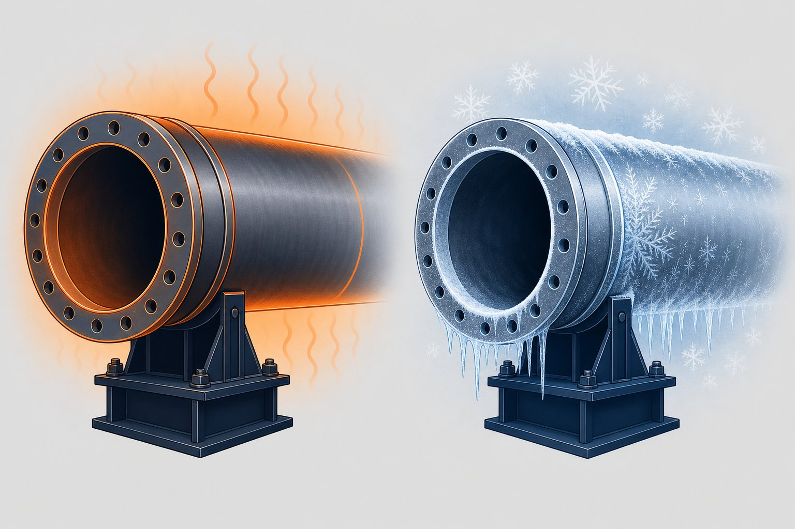

چرا این مقایسه مهم است؟
در بسیاری از پروژهها، انتخاب بین لوله دمای بالا و لوله دمای پایین به یک سوال خرید تبدیل میشود؛ در حالی که این دو برای دو دنیای دمایی متفاوت ساخته شدهاند. انتخاب اشتباه در سمت سرما یعنی ریسک شکست ترد، و انتخاب اشتباه در سمت گرما یعنی هزینه بیمورد. این راهنما تفاوتها را یکبار برای همیشه روشن میکند.

معرفی کوتاه دو لوله
- لوله دمای بالا: لوله کربنی بدون درز برای سرویسهای دمای بالا؛ پرکاربردترین انتخاب خطوط فرایندی پالایشگاه و پتروشیمی.
- لوله دمای پایین: لوله کربنی بدون درز یا جوشی برای سرویسهای زیر صفر؛ با تست ضربه اجباری و کنترلشده برای جلوگیری از شکست ترد.
جدول مقایسه جامع
| معیار | لوله دمای بالا | لوله دمای پایین |
|---|---|---|
| کاربرد اصلی | خطوط فرایندی، بخار، دمای بالا | سرویسهای زیر صفر، هوای سرد، برودتی |
| تست ضربه | معمولاً ندارد | الزامی در دمای مشخصه |
| کنترل شیمیایی | استاندارد | سختگیرانهتر و محدودتر |
| ریزساختار | متعارف | ریزدانه کنترلشده |
| حداقل استحکام کششی | حدود ۴۱۵ مگاپاسکال | حدود ۴۱۵ مگاپاسکال |
| قیمت نسبی | اقتصادیتر | بالاتر |
| اتصال همجنس | اتصال کربنی رایج | اتصال مخصوص دمای پایین |
هر دو لوله از خانواده کربن-منگنز هستند؛ تفاوت اصلی در الزامات چقرمگی در سرما است.
نقش کلیدی تست ضربه
شکست ترد در دمای پایین، ریسک اصلی لولههای کربنی است. لوله دمای پایین با تست ضربه در دمای مشخصه تحویل میشود تا جذب انرژی کافی در سرما تضمین شود. برای لوله دمای بالا چنین تستی در شرایط عادی لازم نیست. نکته مهم این است که دمای انجام تست باید با دمای طراحی فلز در پروژه هماهنگ باشد و نتایج آن در گواهی مواد قابل ردیابی باشد.
معیارهای انتخاب
- دمای طراحی فلز را از مدارک فرایندی استخراج کنید.
- اگر دما در محدوده زیر صفر است و کد پروژه تست ضربه میخواهد، لوله دمای پایین انتخاب کنید.
- برای سرویسهای دمای محیطی و بالاتر، لوله دمای بالا کافی و اقتصادی است.
- اتصالات، فلنجها و جوش را همجنس با لوله انتخاب کنید.
- نتایج تست ضربه را در گواهی مواد کنترل کنید.
جمعبندی
انتخاب بین این دو لوله را دمای طراحی تعیین میکند، نه قیمت. با شفاف کردن دمای سرویس در استعلام، از پیشنهاد صحیح و قابل دفاع در بازرسی مطمئن شوید.
سوالات رایج
مرز دمایی انتخاب بین این دو لوله کجاست؟
به طور کلی وقتی دمای طراحی فلز به محدوده زیر صفر نزدیک میشود و کد پایپینگ پروژه تست ضربه را الزامی میداند، باید سراغ لوله دمای پایین رفت. در دماهای محیطی و بالاتر، لوله دمای بالا انتخاب پیشفرض و اقتصادیتر است. مرجع نهایی، دمای طراحی درجشده در مدارک پروژه است.
آیا لوله دمای بالا تست ضربه دارد؟
در شرایط عادی خیر؛ الزام تست ضربه برای لوله دمای بالا فقط در حالتهای خاص کدی یا درخواست قراردادی مطرح میشود. لوله دمای پایین اما ذاتاً با تست ضربه در دمای مشخصه تحویل میشود.
چرا لوله دمای پایین گرانتر است؟
کنترل دقیقتر ترکیب شیمیایی، الزام ریزدانهسازی، انجام تست ضربه در دمای پایین و کنترلهای تکمیلی ساخت، هزینه تولید را افزایش میدهد. این هزینه در برابر ریسک شکست ترد در سرما کاملاً توجیهپذیر است.
اتصالات همجنس این لولهها چیست؟
برای لوله دمای بالا از اتصالات کربنی رایج و برای لوله دمای پایین از اتصالات مخصوص دمای پایین استفاده میشود. همجنس بودن لوله و اتصال برای یکپارچگی رفتار مکانیکی در دمای سرویس الزامی است.
مطالب مرتبط
- لوله دمای پایین کربنی؛ مشخصات و نکات خرید
- راهنمای لوله کربنی دمای بالا
- راهنمای جامع لوله مانیسمان
- راهنمای کامل گواهی مواد و تست
- معیار انتخاب بین لوله کربنی برای کاربریهای عمومی و دمای بالا
در استعلام خود دمای طراحی، فشار و استاندارد مورد نیاز را ذکر کنید تا گرید مناسب (دمای بالا یا دمای پایین با تست ضربه) پیشنهاد شود. گواهی مواد با نتایج تست در هر دو حالت ارائه میشود.
مشاهده صفحه محصول ← ثبت RFQ همین محصولتامین این تجهیزات را به پیشرو تجهیز فرتاک بسپارید
شرکت پیشرو تجهیز فرتاک تامینکننده تخصصی تجهیزات صنعتی برای پروژههای نفت، گاز، پتروشیمی، فولاد و نیروگاهی است. برای دریافت پیشنهاد فنی و قیمت، استعلام (RFQ) خود را ثبت کنید تا کارشناسان مهندسی فروش در کوتاهترین زمان پاسخ دهند.
- تامین لوله مانیسمانلوله کربنی و آلیاژی با گواهی مواد و نتایج تست
- تامین تجهیزات پایپینگفلنج، اتصالات و شیرآلات مطابق مدارک پروژه